import plotly.express as px
import pandas as pd
import numpy as np
import plotly.io as pio
tips = px.data.tips()8 Data Visualization Types
8.1 Slides
You can review the slides below, which was used to record the video. Or you can jump directly to the following sections, which contain more detail about each type of visualization.
 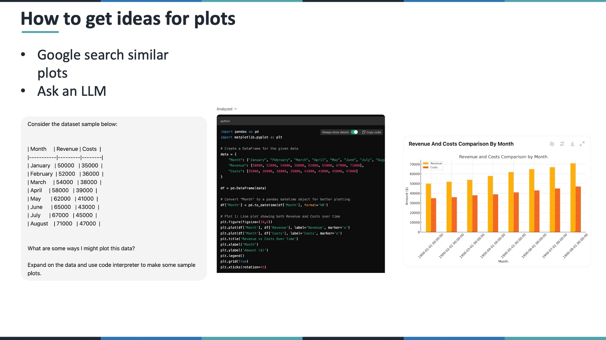 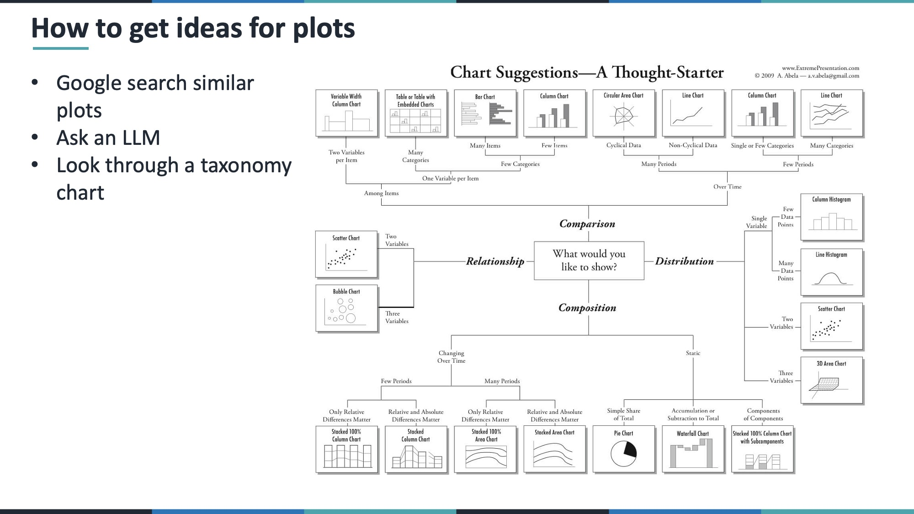 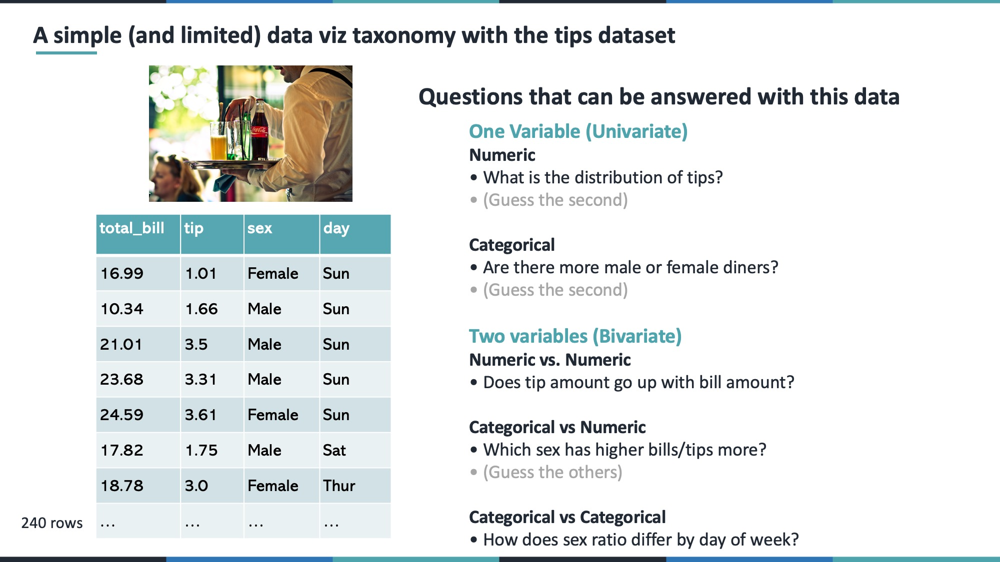 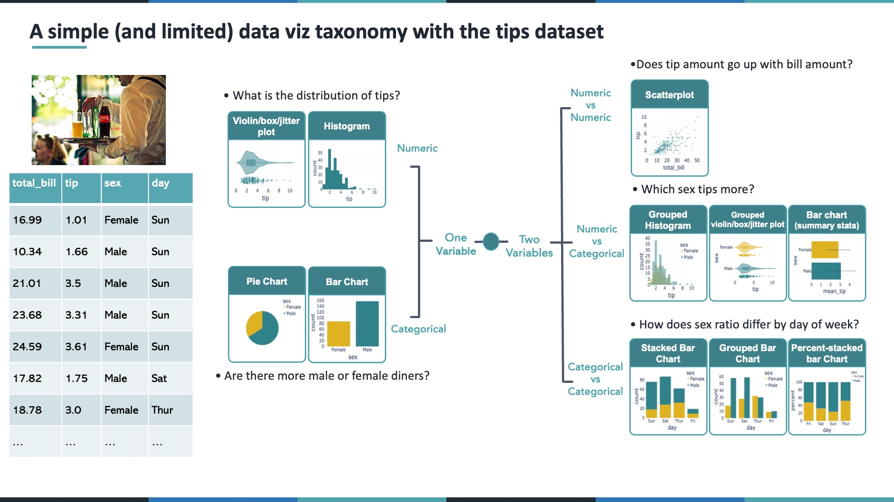
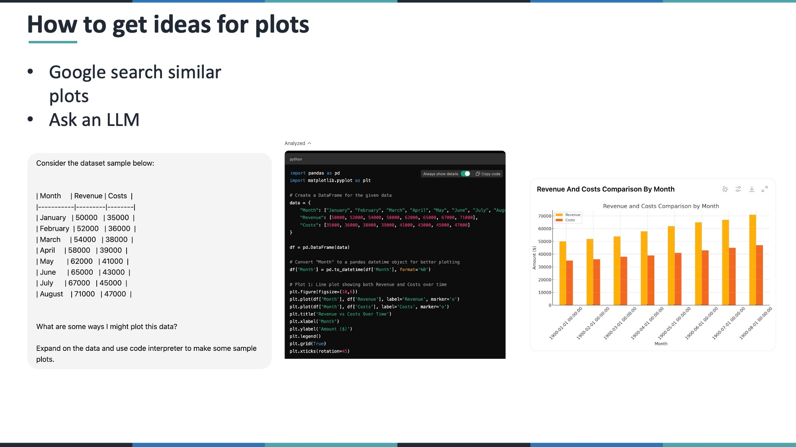 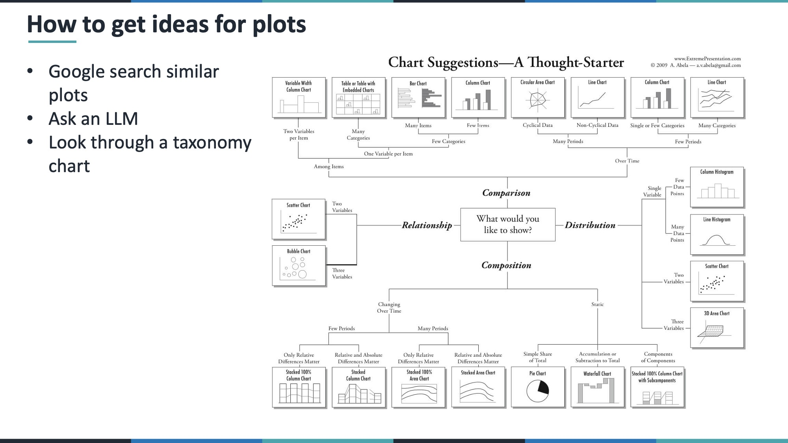 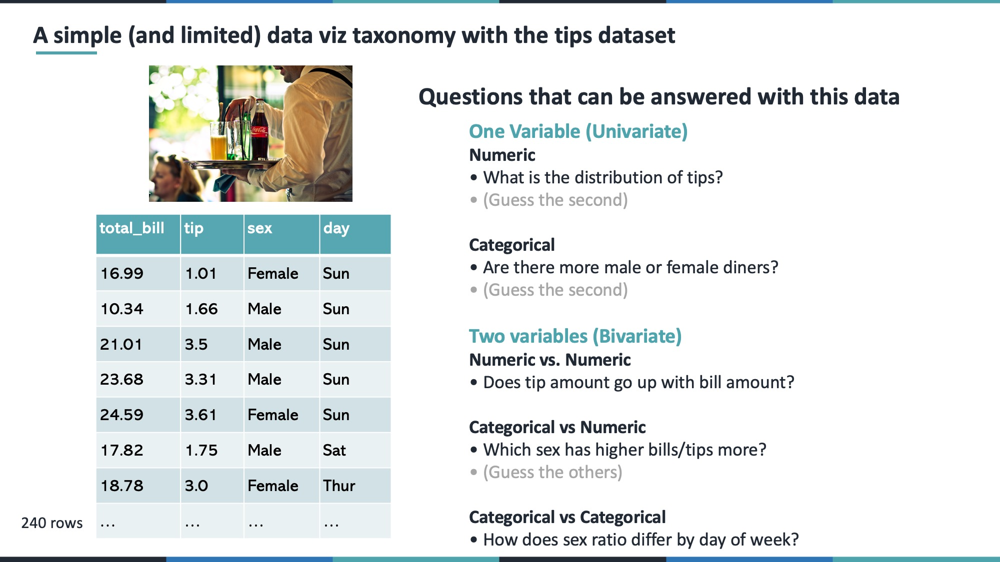 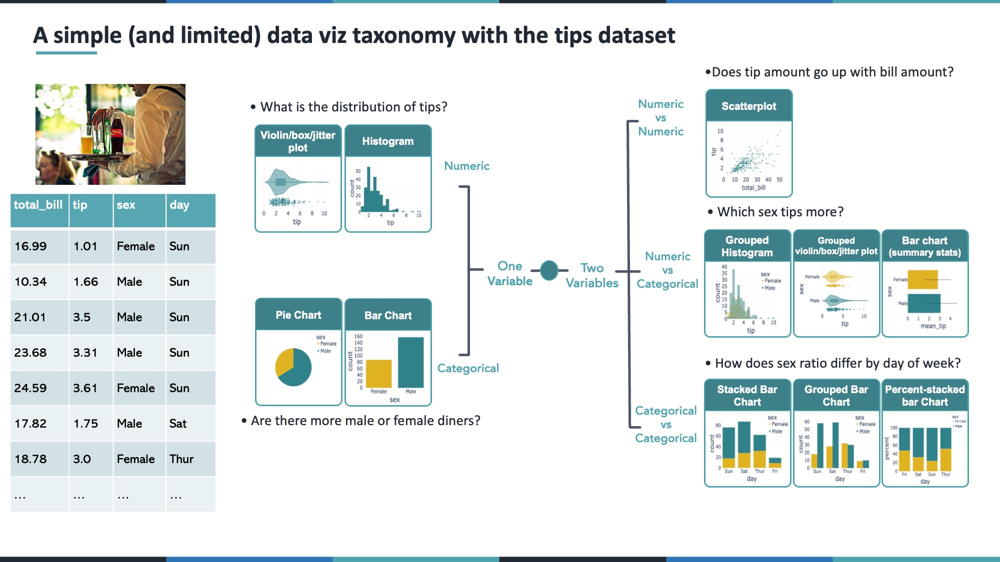 


 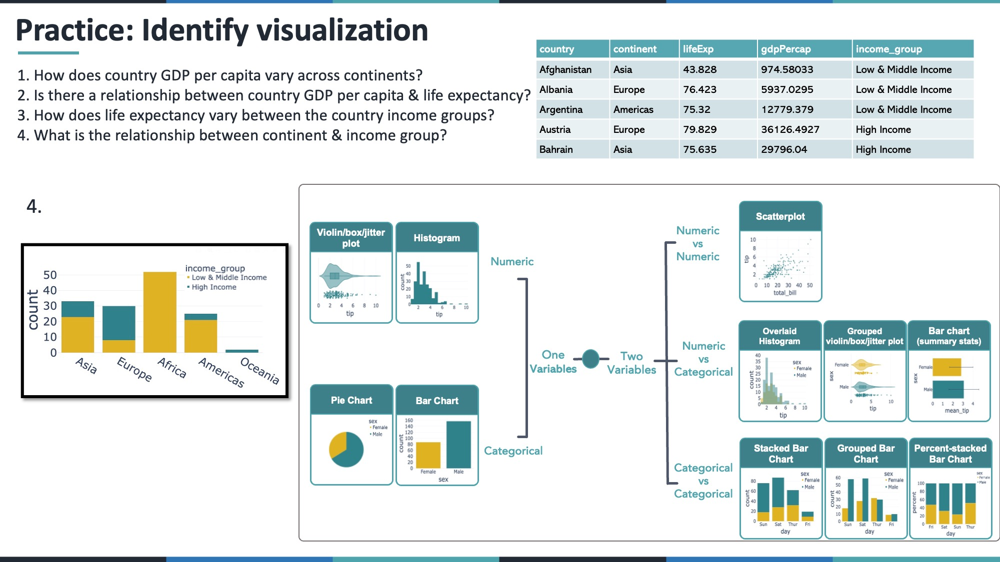 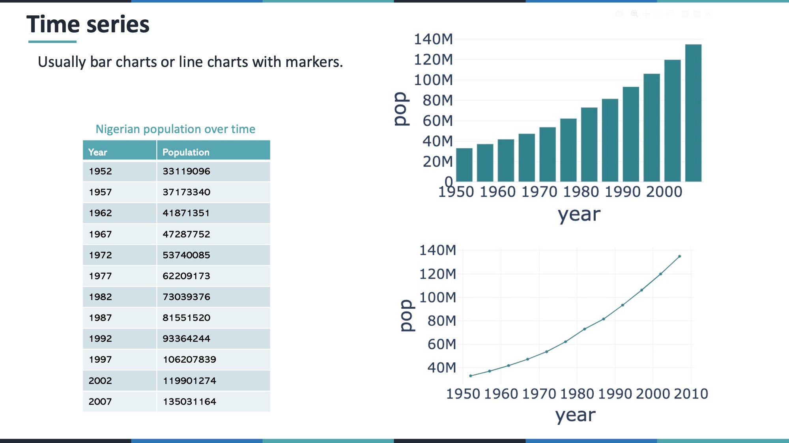 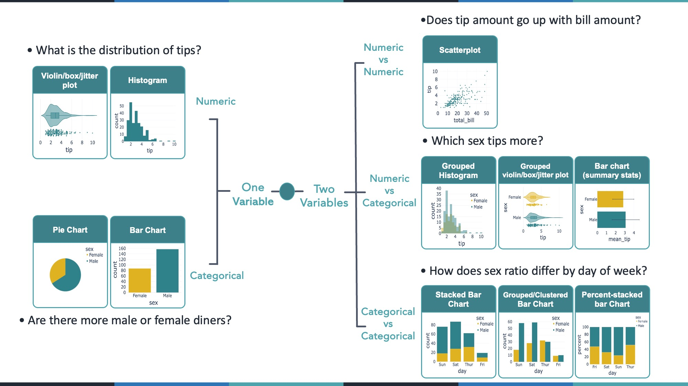
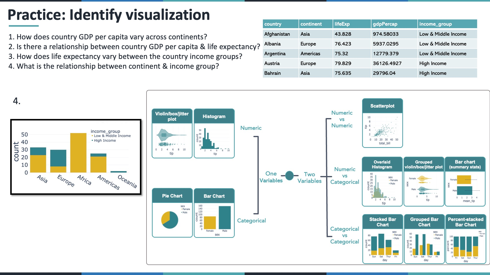 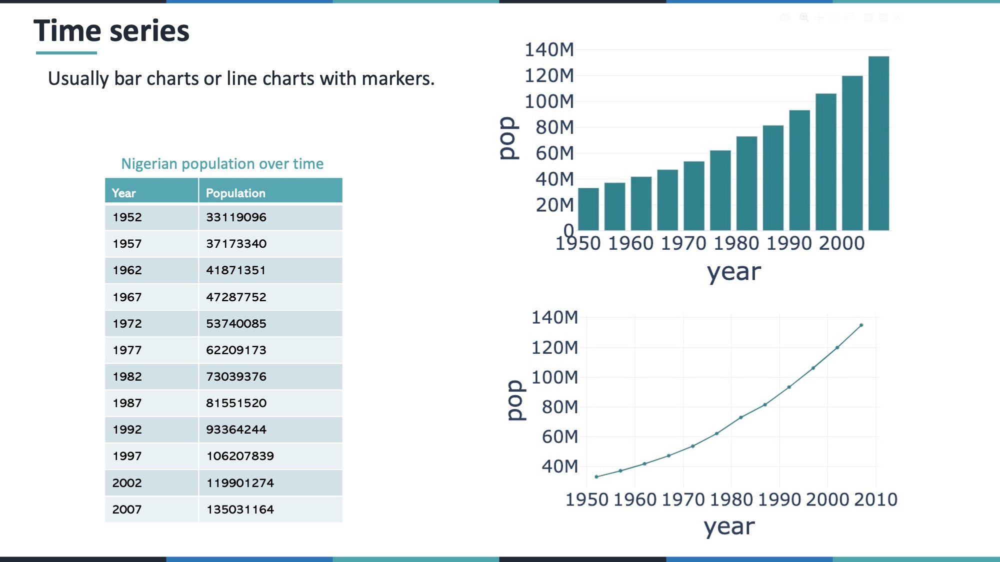 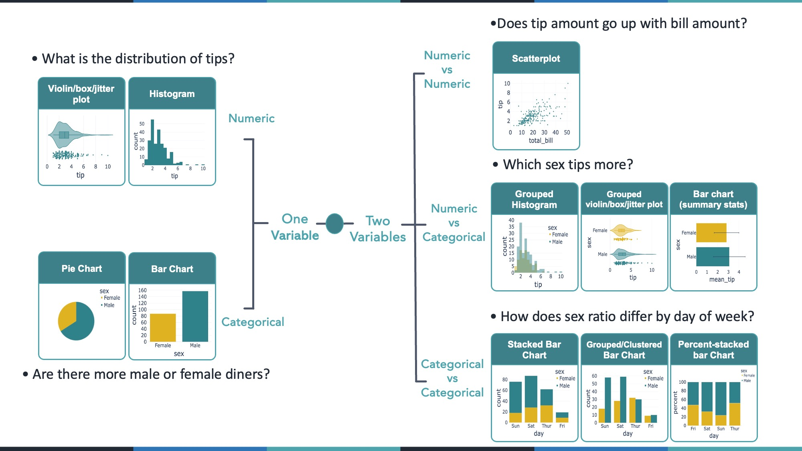
8.2 Intro
In data visualization, there are often three main steps:
- Wrangle and clean your data.
- Pick the right type of visualization for your question.
- Write the code to implement that visualization.
In this lesson, we focus on step #2: understanding which types of plots best suit particular kinds of questions. We’ll look at examples from the built-in tips dataset in Plotly, exploring:
- Univariate (single variable) numeric data
- Univariate (single variable) categorical data
- Bivariate numeric vs numeric
- Bivariate numeric vs categorical
- Bivariate categorical vs categorical
- Time series
We then practice with another dataset (gapminder) to reinforce how to choose an effective plot for your data and your question.
8.3 Setup
Run the following code to set up the plotting environment and load the tips dataset from Plotly Express.
9 1. Univariate Plots
When exploring one column (variable) in your data, your choice of visualization depends on whether that column is numeric (e.g. tip, total_bill) or categorical (e.g. sex, day).
9.1 1.1 Univariate Numeric
Questions of the form: > What is the distribution of a numeric variable?
> What’s its range? Its median? Where do most values lie?
Possible visualizations include:
- Histogram – good for seeing the overall distribution of values.
- Box Plot – highlights the median, quartiles, and outliers.
- Violin Plot – combines a box plot with a “smoothed” histogram (density) shape.
- Strip/Jitter Plot – shows each individual point, slightly “jittered” so they’re not on top of each other.
9.1.1 Histogram
fig_hist = px.histogram(tips, x='tip')
fig_hist.show()9.1.2 Box Plot
fig_box = px.box(tips, x='tip')
fig_box.show()9.1.3 Violin Plot (with Box + Points)
fig_violin = px.violin(tips, x='tip', box=True, points='all')
fig_violin.show()9.2 1.2 Univariate Categorical
Questions of the form: > How many observations fall into each category? > In the case of the tips dataset, how many observations are there for each sex?
Possible visualizations include:
- Bar Chart – typically counts how many rows fall into each category.
- Pie Chart – can be used if you have only a few categories and want to highlight proportions.
9.2.1 Bar Chart
fig_bar_cat = px.histogram(tips, x='sex', color='sex', color_discrete_sequence=['#deb221', '#2f828a'])
fig_bar_cat.update_layout(showlegend=False)
fig_bar_cat.show()9.2.2 Pie Chart
fig_pie_cat = px.pie(tips, names='sex', color='sex', values='tip',
color_discrete_sequence=['#deb221', '#2f828a'])
fig_pie_cat.update_layout(showlegend=False)
fig_pie_cat.update_traces(textposition='none')
fig_pie_cat.show()10 2. Bivariate Plots
When comparing two variables, consider whether they’re numeric or categorical. We’ll look at:
- Numeric vs Numeric
- Numeric vs Categorical
- Categorical vs Categorical
10.1 2.1 Numeric vs Numeric
Typical question: > Do two numeric variables correlate? > In the case of the tips dataset, does the total bill correlate with the tip?
A scatter plot is usually the first choice.
fig_scatter = px.scatter(tips, x='total_bill', y='tip')
fig_scatter.show()10.2 2.2 Numeric vs Categorical
Typical questions: > Which group has higher values on average?
> In the case of the tips dataset, do men or women tip more?
Visual options:
- Grouped Histograms – separate histograms for each category (often overlaid).
- Grouped Box/Violin/Strip – one distribution plot per category.
- Summary Bar Chart – show mean (or median) for each category, optionally with error bars.
10.2.1 Grouped Histogram
fig_grouped_hist = px.histogram(tips, x='tip', color='sex', barmode='overlay',
color_discrete_sequence=['#deb221', '#2f828a'])
fig_grouped_hist.show()10.2.2 Grouped Violin/Box/Strip
fig_grouped_violin = px.violin(tips, y='sex', x='tip', color='sex',
box=True, points='all',
color_discrete_sequence=['#deb221', '#2f828a'])
fig_grouped_violin.update_layout(showlegend=False)
fig_grouped_violin.show()10.2.3 Summary Bar (Mean + Std)
summary_df = tips.groupby('sex').agg({'tip': ['mean', 'std']}).reset_index()
summary_df.columns = ['sex', 'mean_tip', 'std_tip']
fig_mean_bar = px.bar(
summary_df,
y='sex',
x='mean_tip',
error_x='std_tip',
color='sex',
color_discrete_sequence=['#deb221', '#2f828a'],
)
fig_mean_bar.update_layout(showlegend=False)
fig_mean_bar.show()10.3 2.3 Categorical vs Categorical
Typical question: > How do two categorical variables overlap?
> In the case of the tips dataset, how does the sex ratio differ by day of the week?
Visual options:
- Stacked Bar Chart – total counts, stacked by category.
- Grouped/Clustered Bar Chart – side-by-side bars per category.
- Percent Stacked Bar Chart – each bar scaled to 100% so you see proportions.
10.3.1 Grouped Bar
fig_grouped_bar = px.histogram(tips, x='day', color='sex', barmode='group',
color_discrete_sequence=['#deb221', '#2f828a'])
fig_grouped_bar.show()10.3.2 Stacked Bar
fig_stacked_bar = px.histogram(tips, x='day', color='sex',
color_discrete_sequence=['#deb221', '#2f828a'])
fig_stacked_bar.show()10.3.3 Percent Stacked
fig_percent_stacked = px.histogram(tips, x='day', color='sex',
barmode='stack', barnorm='percent',
color_discrete_sequence=['#deb221', '#2f828a'])
fig_percent_stacked.show()11 3. Time Series
Although you can treat time as a numeric variable, time series are unique because they show how values change over continuous time. Common plots:
- Line Charts – ideal for continuous trends.
- Bar Charts – can work, but typically suggest discrete steps rather than a smooth progression.
Example with Nigeria’s population from Plotly’s gapminder dataset:
gap_dat = px.data.gapminder()
nigeria_pop = gap_dat.query('country == "Nigeria"')
# Bar Chart
fig_nigeria_bar = px.bar(nigeria_pop, x='year', y='pop')
fig_nigeria_bar.show()
# Line Chart with Points
fig_nigeria_line = px.line(nigeria_pop, x='year', y='pop', markers=True)
fig_nigeria_line.show()12 4. Practice with the Gapminder Dataset
Below, we filter gapminder to the year 2007 and add a simple income group classification. Then we answer some common questions. Try thinking: “Is this numeric vs numeric, numeric vs categorical, or categorical vs categorical?” Then select your plot accordingly.
gap_2007 = (
gap_dat
.query("year == 2007")
.drop(columns=["iso_alpha", "iso_num", "year"])
.assign(income_group=lambda df: np.where(df.gdpPercap > 15000, "High Income", "Low & Middle Income"))
)
gap_2007.head()| country | continent | lifeExp | pop | gdpPercap | income_group | |
|---|---|---|---|---|---|---|
| 11 | Afghanistan | Asia | 43.828 | 31889923 | 974.580338 | Low & Middle Income |
| 23 | Albania | Europe | 76.423 | 3600523 | 5937.029526 | Low & Middle Income |
| 35 | Algeria | Africa | 72.301 | 33333216 | 6223.367465 | Low & Middle Income |
| 47 | Angola | Africa | 42.731 | 12420476 | 4797.231267 | Low & Middle Income |
| 59 | Argentina | Americas | 75.320 | 40301927 | 12779.379640 | Low & Middle Income |
For each section below, try to answer the question on your own before looking at the solution.
12.1 4.1 How does GDP per capita vary across continents?
- GDP per capita = numeric
- Continent = categorical
A violin or box plot grouped by continent works well.
fig_gdp_violin = px.violin(
gap_2007,
x="gdpPercap",
y="continent",
color="continent",
box=True,
points="all",
color_discrete_sequence=px.colors.qualitative.G10
)
fig_gdp_violin.update_layout(showlegend=False)
fig_gdp_violin.show()12.2 4.2 Is there a relationship between a country’s GDP per capita and life expectancy?
- GDP per capita = numeric
- Life expectancy = numeric
A scatter plot is typically best.
fig_scatter_gdp_life = px.scatter(gap_2007, x='gdpPercap', y='lifeExp')
fig_scatter_gdp_life.show()12.3 4.3 How does life expectancy vary between the income groups?
- Life expectancy = numeric
- Income group = categorical
Use grouped box, violin, or strip plots.
fig_life_violin = px.violin(gap_2007, x="income_group", y="lifeExp", box=True, points="all")
fig_life_violin.show()12.4 4.4 What is the relationship between continent and income group?
- Continent = categorical
- Income group = categorical
A stacked or percent-stacked bar chart is a good choice.
fig_continent_income = px.histogram(
gap_2007,
x='continent',
color='income_group',
barmode='stack',
color_discrete_sequence=['#deb221', '#2f828a']
)
fig_continent_income.show()13 Conclusion
Picking the right type of visualization starts with asking:
1. How many variables am I looking at?
2. Are they numeric or categorical?
3. What exact question am I trying to answer?
Most of the time, the plots shown above (histograms, box/violin plots, scatter plots, bar charts, etc.) will be enough to communicate your insights effectively. For time series or more specialized questions, you might pick line charts or other advanced visualizations.
Keep practicing with different datasets and always ask yourself: “Which plot would best answer the question at hand?”